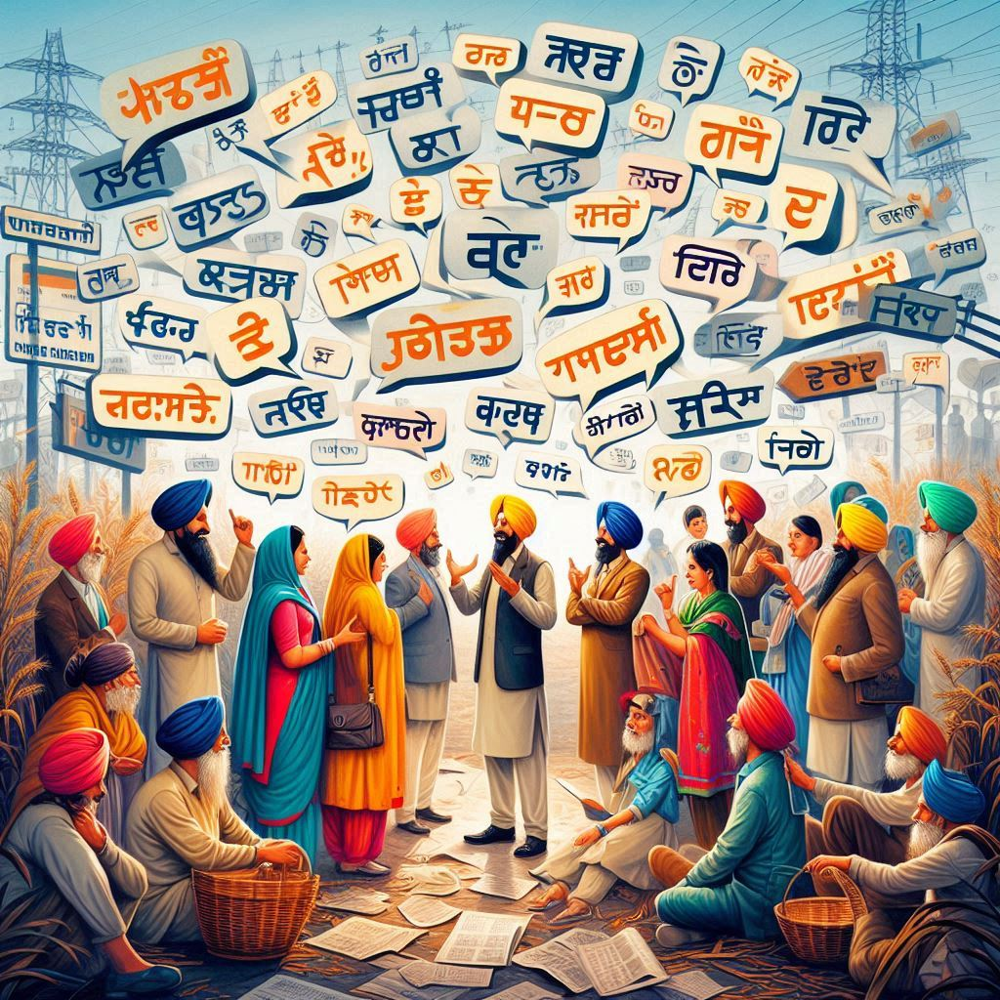
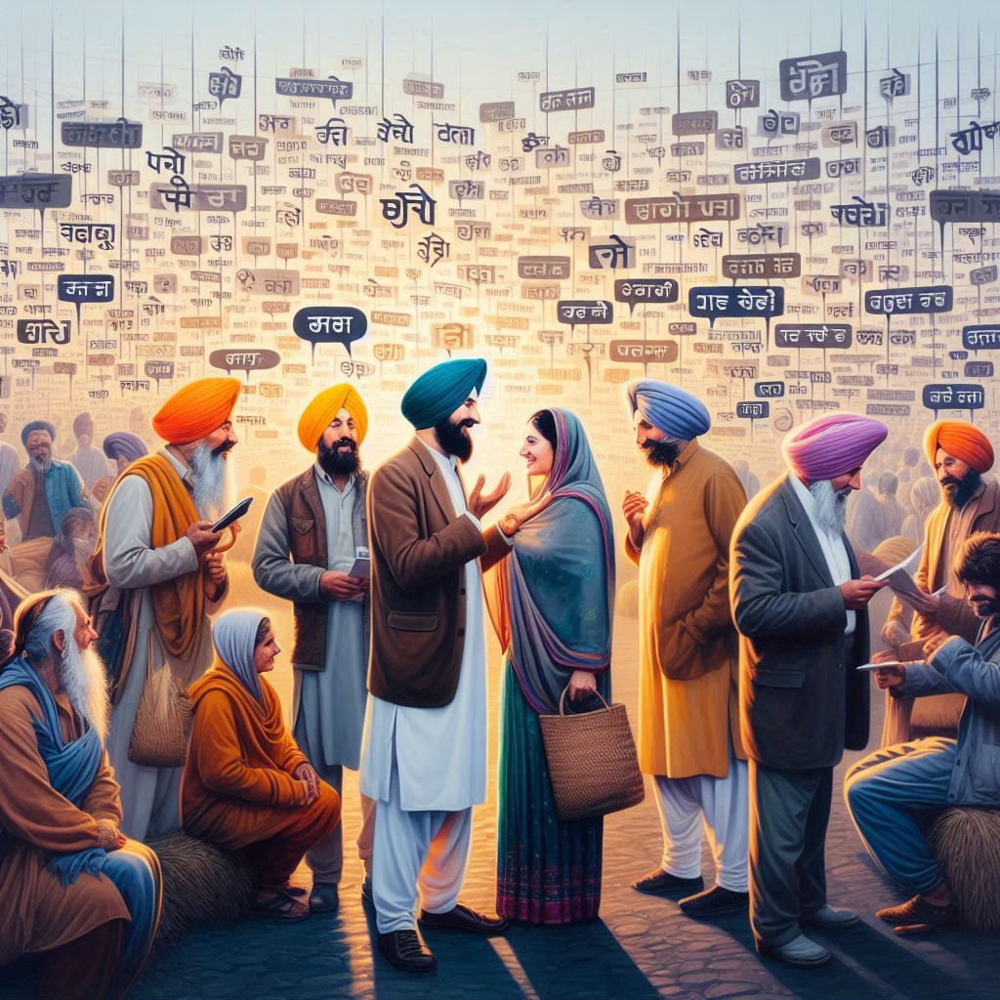

Languages of Indian Punjab reflect the state’s rich cultural diversity, with several languages spoken by its people. The linguistic landscape is influenced by historical, cultural, and religious factors. Here's an overview of the
languages spoken in Indian Punjab:
1. Punjabi (Official Language)
- Punjabi is the official language of Indian Punjab and is spoken by the majority of the population. It belongs to the Indo-Aryan language family and is written in the Gurmukhi script, which was developed by the Sikh Gurus.
- Dialects: Punjabi has several regional dialects, including:
- Majhi: This is considered the standard dialect and is spoken in the central region of Punjab, including the capital city of Chandigarh.
- Doabi: Spoken in the area between the Beas and Sutlej rivers, this dialect has a unique flavor and vocabulary.
- Malwai: Spoken in the southern part of Punjab, this dialect includes influences from the Rajasthani language.
- Pahari: This dialect is spoken in the northeastern hilly regions of Punjab, near the foothills of the Himalayas.
- Cultural Significance: Punjabi is the language of the majority of Sikhs, and it holds great cultural and religious importance. Most Sikh religious texts, including the Guru Granth Sahib, are written in Punjabi, and it is central to Sikhism.
2. Hindi
- Hindi is widely spoken and understood in Punjab, especially in urban areas and among people who migrate from other parts of India. It is the second official language of Punjab and serves as a lingua franca for people from different linguistic backgrounds.
- Devanagari Script: Hindi is written in the Devanagari script, in contrast to Punjabi, which is written in Gurmukhi.
3. English
- English is widely spoken, particularly in urban areas, as a second or third language. It is the language of education, administration, and business. Many people in Punjab use English for official and professional communication, especially in higher education and corporate settings.
4. Urdu
- Urdu is spoken by some people, particularly in areas of Punjab that were historically part of Pakistan before the Partition of India in 1947. It shares much of its vocabulary and grammar with Hindi, but it is written in the Perso-Arabic script. Urdu was once widely spoken in urban centers and still has a significant presence, especially among the Muslim population of Punjab.


5. Other Languages and Dialects
- Himachali: In the northern parts of Punjab, particularly in regions bordering Himachal Pradesh, a dialect of Himachali is spoken. It is influenced by languages such as Pahari and Hindi.
- Rajasthani: In the southern part of Punjab, closer to the Rajasthan border, Rajasthani dialects like Marwari or Malwi are spoken by a small portion of the population.
- English-Punjabi Hybrid: Many urban dwellers in Punjab use a mixture of English and Punjabi, which is referred to as “Punglish” or “Punjabi-English code-switching”. This is especially common in younger generations and in the media.
6. Religious and Cultural Influences:
- Sikhism: The Punjabi language is deeply connected to Sikhism. The sacred texts of Sikhism, including the Guru Granth Sahib, are written in a combination of Punjabi, Sanskrit, and Persian. Punjabi is often used in religious hymns and prayer services.
- Muslim Community: The Urdu language has significant importance in the Muslim community of Punjab. Historically, the region had a large Muslim population, and Urdu was once more widely spoken across the state.
7. Conclusion
The languages spoken in Indian Punjab are diverse, with Punjabi being the dominant language of the region, particularly in rural areas. Hindi and English are also widely spoken, and Urdu retains cultural significance, especially among the Muslim population. The linguistic diversity of Punjab reflects the state's rich history and the interaction of various cultures, religions, and communities over the centuries.